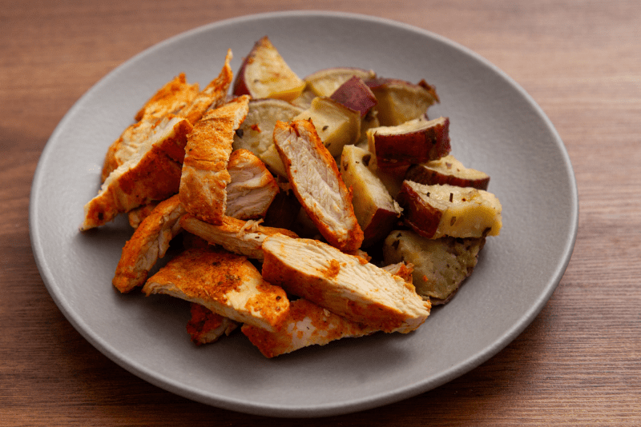
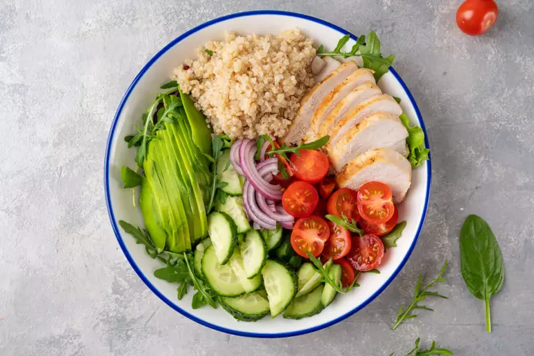
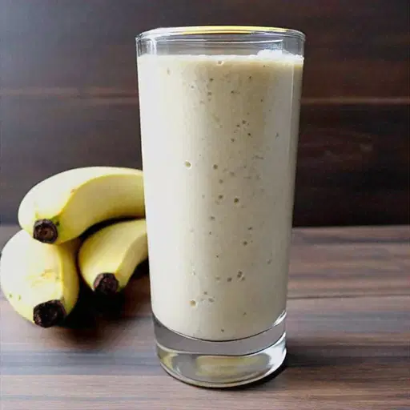

💪 Bulking: Frango com Batata Doce
Ingredientes:
- 1 peito de frango
- 1 batata doce média
- 1 colher de azeite
- Sal e pimenta a gosto
Modo de Preparo:
- Cozinhe a batata doce até ficar macia.
- Grelhe o frango com azeite e temperos.
- Sirva com a batata doce e um fio de azeite.

🌱 Cutting: Salada Proteica
Ingredientes:
- 1 xícara de folhas verdes
- 100g de peito de frango desfiado
- 1/2 abacate
- 1 colher de azeite
- Suco de meio limão
Modo de Preparo:
- Misture todos os ingredientes em um bowl.
- Tempere com azeite e limão.
- Sirva gelado.

🏃 Corrida: Smoothie Energético
Ingredientes:
- 1 banana
- 1 copo de água de coco
- 1 colher de mel
- 5 cubos de gelo
Modo de Preparo:
- Bata todos os ingredientes no liquidificador.
- Sirva imediatamente.
🔥 Emagrecimento: Sopa Detox
Ingredientes:
- 1 cenoura picada
- 1 abobrinha picada
- 1 xícara de couve
- 500ml de caldo de legumes
- Sal e pimenta a gosto
Modo de Preparo:
- Cozinhe todos os ingredientes até ficarem macios.
- Bata no liquidificador até obter um creme.
- Sirva quente.